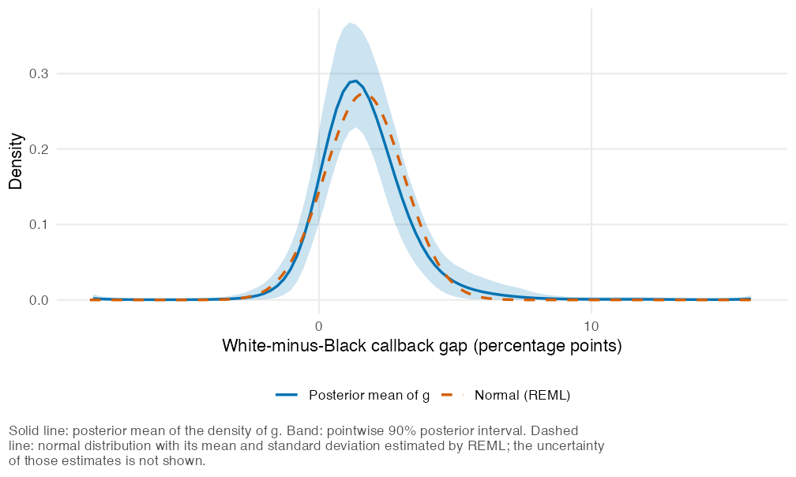
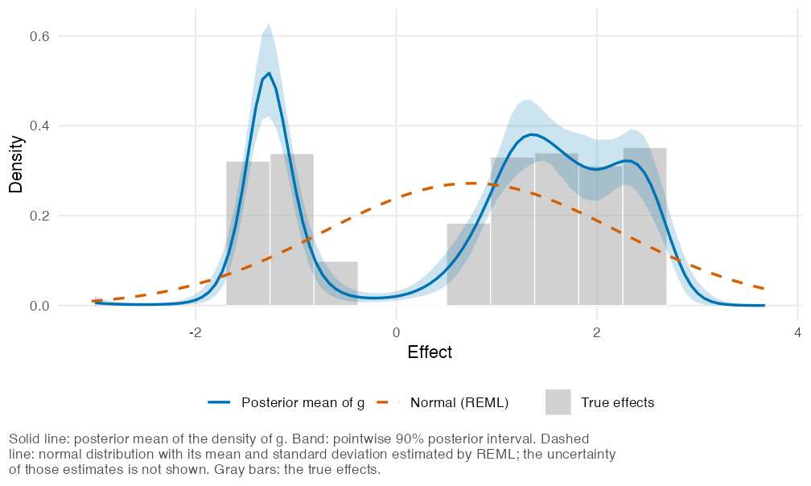

A meta-analysis or a multisite trial gives an estimate and a standard error for each site. The usual random-effects model assumes that the true effects behind the estimates follow a normal distribution. bayesEfron fits the same model without that assumption. It estimates the distribution of true effects, which may be skewed or have more than one peak, together with the effect of each site. The distribution is represented by Efron’s log-spline family and the model is fully Bayesian, so that the intervals for the site effects include the uncertainty about the distribution (Lee and Sui, 2025).
Installation
You can install bayesEfron from GitHub with:
# install.packages("remotes")
remotes::install_github("joonho112/bayesEfron")The vignettes are on the package website. To install them with the package, you need knitr, rmarkdown and Pandoc (RStudio includes Pandoc). Then add build_vignettes = TRUE to the call above.
Fitting a model also requires the cmdstanr package and CmdStan, neither of which is on CRAN:
install.packages("cmdstanr",
repos = c("https://stan-dev.r-universe.dev", getOption("repos")))
cmdstanr::install_cmdstan()CmdStan is built from source and needs a C++ toolchain. Use cmdstanr::check_cmdstan_toolchain() to check whether you have one. The cmdstanr Getting started article describes the installation and points to the requirements for each operating system. The bayesEfron examples and vignettes run without CmdStan.
Example
The data set krw_discrimination contains estimates for 97 large U.S. firms from the correspondence experiment of Kline, Rose and Walters (2022). For each firm, yi is the difference between the callback rates of job applications with distinctively white and distinctively Black names, and sei is its standard error, clustered by job vacancy. A positive gap favors applications with white names, and 0.02 is a gap of 2 percentage points. The sample follows the authors’ 2024 analysis, and the estimates come from the public replication code that accompanies Walters (2024). Lee and Sui (2025) analyze these data with this model.
library(bayesEfron)
head(krw_discrimination[, c("firm_name", "yi", "sei")], 3)
#> firm_name yi sei
#> 1 Rite Aid 0.04695712 0.01619358
#> 2 KFC 0.02200000 0.01530472
#> 3 Victoria's Secret 0.04216161 0.02296031We fit the model with bayes_efron_fit(). This call requires CmdStan, and the first call compiles the Stan program, which can take up to a minute.
dat <- as_bef_data(krw_discrimination, site = "firm_name")
fit <- bayes_efron_fit(dat, seed = 20250807)The result of this call is included in the package as krw_fit (thinned to 800 draws), so the rest of the example runs without CmdStan.
fit <- krw_fit
fit
#> <bayesEfron fit>
#> Model family: RE
#> Sites: 97
#> Grid method: pilot
#> Runtime: 0.7197 sec
#> Draws: 800 (4 chains, one iteration in 15 kept); site-level draws not kept
#> Diagnostics: Rhat 1.002; ESS bulk 1731; ESS tail 1780; divergences 0; treedepth hits 0
#> Standard errors: 0.005344 to 0.0392 (largest / smallest 7.335)
#> Grid: 101 points from -0.0829 to 0.1585; smallest standard error 2.213 grid spacings
#> Grid range: rule "pilot", not narrowed (the range of "paper_realdata"); point masses; 6 spline functions
#> Next: summary() and site_summary() for the sites, g_summary() for the distribution of effects, plot().g_summary() summarizes the distribution of the gaps across firms. Here we ask for its mean, variance and standard deviation on the percentage-point scale, and for the proportion of firms with a positive gap. Each row has a posterior mean and a 90% posterior interval.
g_summary(fit, type = "moments", scale = 100)
#> parameter mean lower upper
#> 1 mean_g 1.660178 1.308119 2.064913
#> 2 var_g 3.076948 1.399332 5.738865
#> 3 sd_g 1.716216 1.182933 2.395593
g_summary(fit, type = "prob", lower = 0)
#> from to mean lower upper
#> 1 0 Inf 0.8754888 0.8083673 0.9366439site_summary() returns posterior summaries of the gap at each firm, and exceedance_prob() the posterior probability that a gap is positive.
sites <- site_summary(fit, scale = 100)
head(sites[, c("label", "estimate", "se", "mean", "lower", "upper")], 4)
#> label estimate se mean lower upper
#> 1 Rite Aid 4.6957123 1.619358 3.048175 1.0775168 5.349968
#> 2 KFC 2.2000000 1.530472 1.786494 0.1227187 3.581179
#> 3 Victoria's Secret 4.2161613 2.296031 2.334782 0.2864899 4.801767
#> 4 United Rentals 0.5708306 1.504751 1.071991 -0.5107269 2.719213
exceedance_prob(fit, sites = c("Rite Aid", "KFC"))
#> Rite Aid KFC
#> 0.9967216 0.9624721Finally, we plot the estimated distribution together with the normal distribution of a random-effects model.
plot_g(fit, normal = TRUE, scale = 100) +
ggplot2::labs(x = "White-minus-Black callback gap (percentage points)")
The solid curve is the posterior mean of the density of the gaps, and the band is a pointwise 90% posterior interval. The dashed curve is the normal distribution of the usual random-effects model, with its mean and standard deviation estimated by restricted maximum likelihood and shown without their uncertainty. The model is free to depart from the normal shape, and the band shows how well the data determine that shape: better in the center, where the band is narrow relative to the height of the curve, than in the tails.
A distribution with two groups
twin_towers is a simulated data set of 1,500 sites from the public replication files of Lee and Sui (2025), in which the true effects form two groups. In vignette("twin-towers") we fit it with the grid chosen from the estimates alone, as we would for real data, and compare the result with the true effects.

The largest standard error is nine times the smallest, and for about one site in seven it is larger than the gap between the two groups. The fitted density has a peak over each group and little mass between them, which a normal distribution, with its single peak, cannot have. This is a single data set; see vignette("implementation") for how often the 90% intervals contain the true effects across simulated data sets, including the settings in which their coverage falls short of 90%.
Learning more
- Getting started with bayesEfron walks through the analysis of the 97 firms, from preparing the data to summarizing the results.
- Choosing the grid and checking sensitivity to it discusses how the results can depend on the grid.
- Checking a fit covers the diagnostics.
The package website lists the other vignettes. It also has a case study that is not installed with the package: the effect of small classes in the 79 schools of Tennessee’s Project STAR, a multisite trial in education. The estimates for that case study are in star_schools.
Citation
To cite the package, cite the paper, as citation("bayesEfron") shows:
Lee, J. and Sui, D. (2025). Fully Bayesian inference for meta-analytic deconvolution using Efron’s log-spline prior. Mathematics, 13(16), 2639. https://doi.org/10.3390/math13162639